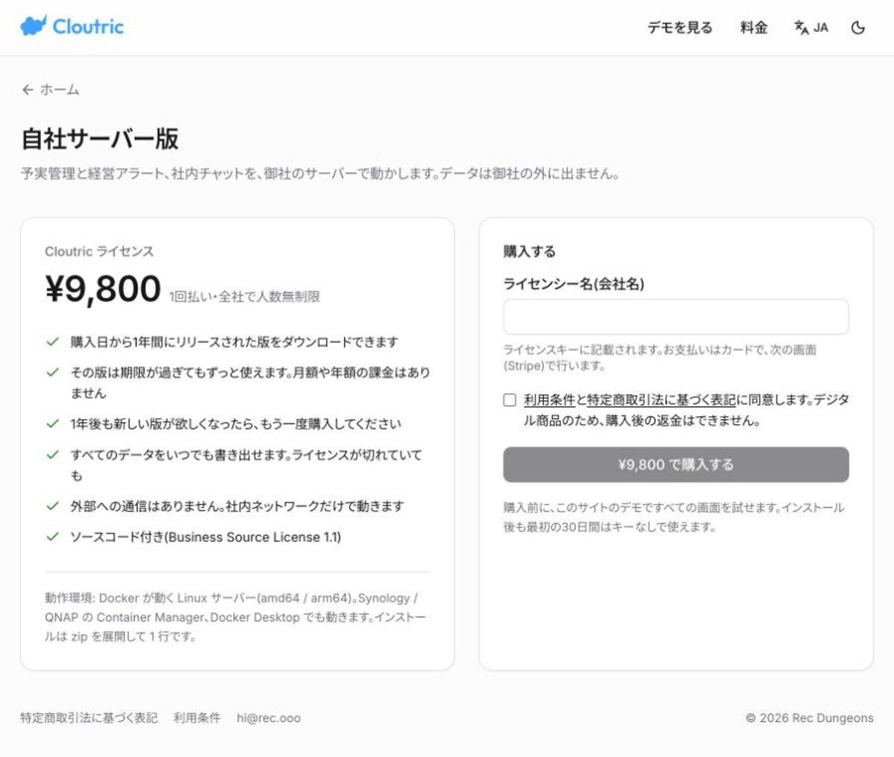
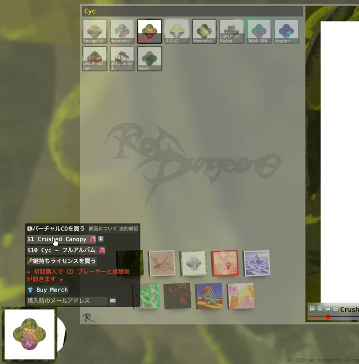
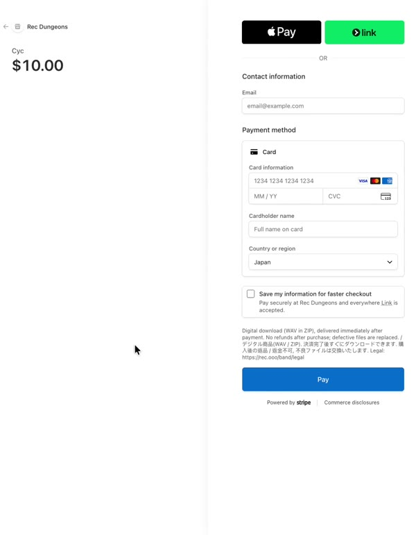
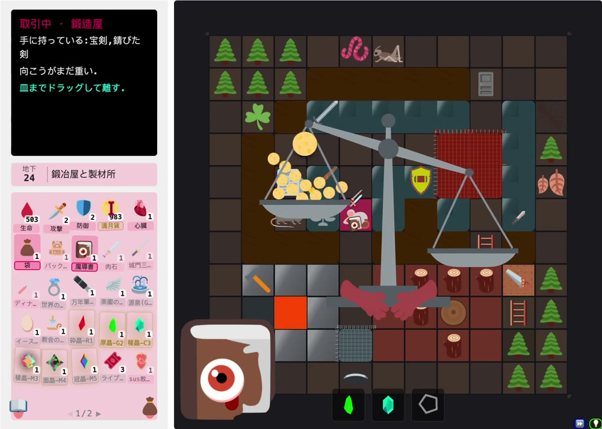

差が大きいほど傾き、上限で頭打ち
二つの正弦で揺らす。同じ局面は毎回同じ動き
減衰は臨界より弱く、少し揺れてから止まる
梁とは別に動き、遅れて揺れる
自分の皿が下がっていれば支払い完了
2026-08-09 から（git rev-list）
16 ファイル
NPC表・敵人表・掉落表 など
| 対象 | 数 | 中身 | 測り方 |
|---|---|---|---|
| 作業台の HTML / JS | 16,331 行 | desks/ の分 | wc -l |
| 音楽ストア | 3,003 行 | 再生・購入・メールでの復元 | wc -l |
| デスクトップの相棒 sus | 8,136 行 | Swift 48 ファイル・378 コミット | wc -l / rev-list |
| 作品集 p.rec.ooo | 90 件 | コミット（2026-04 から） | rev-list |
| デザイン規約 | 21 個 | 部品ごとの決まり 3,308 行 | design-modules |
| 作業の手順書 | 41 本 | 作業の種類ごとに一本 | 見出しを数えた |
* 11 月は 6 日まで。数はすべて 2026-11-06 に測った値
共通の規約（デザイン・文章・記録の書き方）を、作業を始めるたびに自動で読み込む。
依頼の文から、41 本の手順書のうち該当する一本を引いてから着手する。
デザイン規約 21 個。色は :root だけ、説明用の hovertip は付けない など。
19 項目を数える：枠線・角丸・影・アニメーション・4px を超える余白・文字サイズの種類 など。
字数の上限、中身のない言い回し、鉤括弧の中が出典と一致するか。通らなければコミットが止まる。
文書を書くたびに句読点を検査して返す。
ファイルを変えたのに記録がなければ、作業の終了を一度止める。
依頼の原文・判断・結果。知識庫は 3,948 章。次の作業の前提になる。
終わったら、デスクトップの相棒 sus が一言で知らせ、成果物を持ってくる。
| 案 | 売る相手 | 値段 | 売ったあとに要るもの | 三つの条件 |
|---|---|---|---|---|
| A大きな会社に合わせる | 情報システム部門のある 100〜1000 人の会社 | 年額の契約。試算は 50 人まで年 30 万円、200 人まで年 60 万円 | シングルサインオン、データベースの選択、導入の代行、稟議の資料、セキュリティチェックシートへの回答 | 条件 1 を守れない。一人では 30 社前後が上限 |
| Bサーバーのない会社にも届ける | 5〜50 人の会社 | A と同じ年額 | NAS や各社のクラウド口座で起動する雛形。導入の支援が、売ったあとの最大の負担になる | 支援する環境を限っても、導入の対応が残る |
| C採用 | 自分で Docker を動かせる小さなチーム | 9,800 円の一回払い。人数は無制限で、1 年分の更新を含む | 価格はページに公開し、商談はしない。固定費は 0 円から始められる | 三つとも守れる |
出典：Cloutric 開発書 05〈代価〉〈一人の規模〉〈三つの条件〉、06〈価格〉。A の金額は社数の試算に使った仮の値。

社内のネットワークで動かし、外には出さない。
配布は無料の置き場、支払いは決済リンクで受け、ライセンスの鍵は手で発行する。
移るときは、全データをいつでも書き出せる。
| 1 回目（一年前、別のサイト） | 2 回目（2026年9月26日） | 3 回目（9月29日から、採用） | |
|---|---|---|---|
| 払い方 | 月額の購読と、サイト独自のコイン | 単曲 1 ドル、全曲 10 ドルの買い切り | 2 回目と同じ買い切り |
| アカウント | 要る | 作らない | 作らない |
| 買ったものの戻り道 | アカウント | ブラウザに置いた記録だけ | メールアドレス。入力されたアドレスにだけ、新しいリンクを送る |
| 漏らさないこと | — | — | 返事は毎回同じにし、そのアドレスで買ったかどうかを答えない。同じアドレスには 10 分に 1 通まで |
| 結果 | 決済の組み込みが最後まで通らなかった | お礼の画面を閉じた人が、リンクを取り戻せない | 購入、ダウンロード、メールでの復元を、テストモードで最初から最後まで通した |
出典：Rec Dungeons 開発書 32〈決済の作り直し〉。ダウンロードのリンクは 7 日間・1 回限りで、復元のたびに新しく発行する。


送るのは、買ったことのあるアドレスにだけ。
形の壊れたアドレスは受け付けない。
一つのアドレスで二曲買っていれば、一通に二曲分が入る。
魔塔という形のゲームは、攻撃・防御・金貨の数字を計算して詰める遊びになりやすい。2026年8月13日、定番と違える十一の方針を、こだわりの強さ（%）つきで決めた。
出典：sus dungeons 開発書〈十一の方針〉の原文。あとから一つ加えた底線：戦うだけで進む人も、ほかの遊びを飛ばして最後まで行ける。

値段の一覧も倍率の道具もなく、天秤の傾きで払いが足りるかを見る。
梁の傾き、揺れ、皿の振り子を、乱数を使わずに計算している。